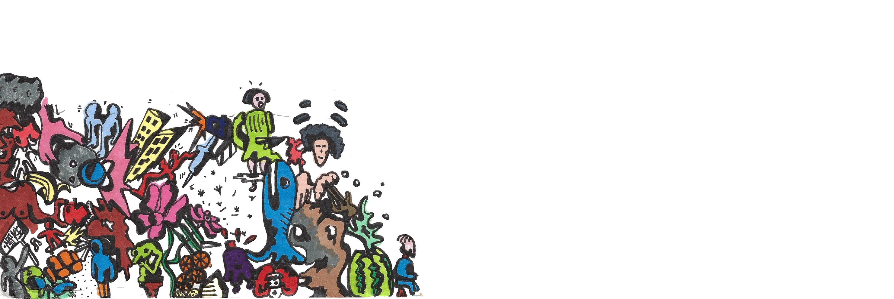
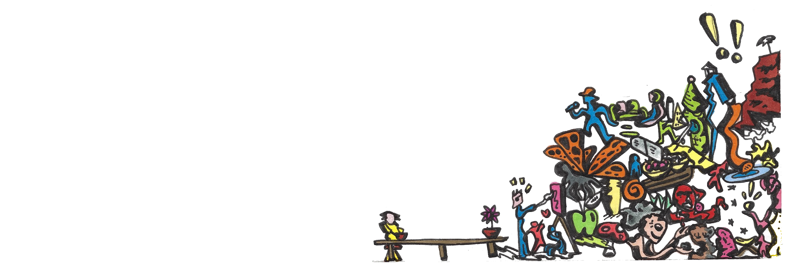
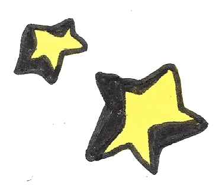
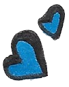
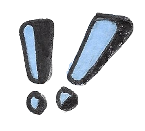
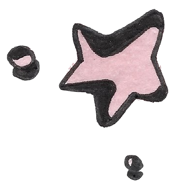
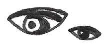
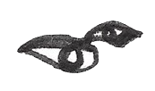
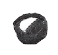
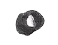

take me back
Inertia
password: inertia
A girl living in Hong Kong during modern revolutionary times is forced to face its realities. This short is a narrative depiction of real events from the last 9 months, originally published in November 2019. To learn more about the situation and how you can support Hong Kongers, visit raaghav.me/inertia.
Leanne is in her 4th year studying at the University of Hong Kong and majoring in Music and German. Raaghav is a 4th year economics major / aspiring filmmaker who spent his last semester at HKU.
Table Manners
password: tm139oh
On Chinese New Year, a single mom introduces her new girlfriend to her traditional family. This film navigates familial barriers caused by generational differences and the experience of cultural dysphoria, while also begging a re-evaluation of how internalized homophobia is rooted. 43% of the crew identifies as LGBTQIA+ and 67% are people of color.
As a 20-year old, Chinese-American film director/writer, Tiana Lucerne Cheung strives to amplify underrepresented voices, specifically with films that capture realism and humanize the Asian-American experience, rather than stuffing characters into tropes.
Altar Healing
Latinx Foster Youth live in between two worlds: we are split and our bones are sore. Altar Healing approaches the altar as a healing space—with superimpositions, time and healing collapse onto themselves. Compression, taste, saturation, fragments, and refusal bring healing inside of the altar.
I am a first generation, Latinx foster youth double majoring in Ethnic Studies and Film; I use film as a medium of healing—ripping it away from dominant hegemonic standards, butchering it, and suturing it to my own imaginations. Foster youth are creators!
Fruit Party
Enter the FRUIT PARTY; a colorful yoniverse of passion and pleasure. Ever since Black folx were uprooted by their captors of the transatlantic slave trade, they have been living in a self-curated space in order to survive. Their Ancestral ties were severed, their sexuality stolen and severely abused, and the ownership of their physical bodies was robbed. FRUIT PARTY is a party held within this self-made space that hosts the black queer body. It celebrates the ownership of power, pleasure, and play. In this space, queer black folx are the rulers of their desires, as well as the governing force over their bodies, actions, and experiences. The variety of fruit in FRUIT PARTY was selected to uniquely enhance the experience depending on the color, sound, size, taste, and feeling of the fruit the individual interacted with. Each fruit connects the black queer body back to the earth in an attempt to mend the fractured relationship between the body and the soil, soul to the homeland.
I am an Afro-German artist living in Oakland and through my work, I explore concepts of identity, ancestral trauma, space, the erotic, and reclamation of power through various mediums such as painting, photography, performance, and video.
Tectonic Shift
Made principally with 35mm negatives found at an estate sale in Burbank, CA. The negatives feature Los Angeles in the early 1980’s, played with a local radio broadcast from the same time period. Negatives scanned by the filmmaker. Practical and computer-generated effects.
He is a Junior majoring in Film Studies at UC Berkeley, and is also an avid photographer who shoots on 35mm and 120 film.
Meditations on the Apple Prototype
In the United States, the apple is culturally ubiquitous, surfacing in idioms (apples and oranges), as the object of disaster (in Snow White), or as a classic archetype of all fruits, of all teacher gifts, of all pies. What else can be found in the meditations of the apple when alternate or unconventional points of view investigate the position and symbolism of the Apple as a model of our lives? This film investigates the extensive possibilities of the apple as a preliminary model of ourselves.
Gilad Barach loves to dance, craves to craft each idea into a film, studies languages and literature, teaches third graders, conceptualizes learning as an endless practice, wants to collaborate, expects transformations, is mystified by Art.
Koyo
Fearing the violence which continues to lurk in society towards the LGBTQ community; Koyo concerns itself with magic realism and the point of view of a loving parent, while pushing against traditional preconceived tropes that are often overplayed in Queer cinema.
Timothy L. Quirus is a passionate storyteller in both film and theater mediums, a first-generation college student proudly honoring his mother’s memory by completing two bachelor degrees, a minor, six associates degrees, four short films, and writing/directing his theatrical capstone play based on the mythology of Medusa; he graduates UC Berkeley May of 2020.
Cue
Karina, a determined film actress, finds herself struggling to improve her acting due to a lack of empathy towards the character she plays. Her struggle, however, seems to vanish once she stops distinguishing real from fantasy, ultimately losing herself to the temptations of murder.
Igor Vilas is an experimental filmmaker from São Paulo, Brazil. His practice centers on exploring the artificiality of film and its ability to deconstruct reality. Cue is Igor’s first approach to narrative production and an attempt to make visual an actor’s state of mind when trying to “get into character.” He is currently a student at UC Berkeley pursuing a Bachelor’s degree in Film Studies.
Bonhomie
What does it look like when one procrastinates and doesn't get their work done on time? We follow Xavier and Niko through a weird, yet intriguing adventure of them trying to reach their goal of getting their work done, but mental contemplation gets the better of them.
Xavier is a Filmmaker, Rapper, and Music Producer from New Jersey.
Bleed Heal Bloom
Bleed Heal Bloom shows different processes of transformation within plant and animal life. The re-potting of a marigold and select frames from a Pathé Frères Brothers 1911 film titled The Carrot Caterpillar are used to demonstrate various modes of growth and their differing effects upon the organism’s consciousness.
Sam Chew is graduating from Cal this May with a degree in Media Studies; his film Your Bones Are Starving showed at BAM/PFA Student Committee's Film Festival in 2019 and he is honored to have been included again this year!
I Survived
“I Survived” is a glimpse into the journey of 83 year old Jewish Hungarian-American artist, teacher and activist Andreè Singer-Thompson. This film celebrates the act of survival and healing by letting oneself “confront [their] subconscious motivations... through the act of making art.” Filmed at Andreè’s home in Berkeley, CA in Fall of 2018 for a class at Berkeley City College.
Stephanie Lister photographs for KQED, makes films and performs with her sister in their multi-media project Oracle Plus while living in Oakland, CA and attending Mills College.
Discovering Light
Discovering Light is a poetic experiment on the effect of light on celluloid. 16mm film is shot without a lens in a double 8mm camera to create two parallel abstractions. Accompanied by a Sufi devotional song, the film is concerned with the special nature and quality of light itself.
Discovering Light is a poetic experiment on the effect of light on celluloid. 16mm film is shot without a lens in a double 8mm camera to create two parallel abstractions. Accompanied by a Sufi devotional song, the film is concerned with the special nature and quality of light itself.
toe knee chest nut nose i love you
Inertia
Leanne Tong and Raaghav Minocha
Table Manners
Tiana Lucerne Cheung
Altar Healings
Michael Allen Papias
Fruit Party
Yana Sternberger-Moye
Tectonic Shift
Zachary Grove
Meditations on the Apple Prototype
Gilad Barach
Bleed Heal Bloom
Sam Chew
I Survived
Stephanie Lister
Discovering Light
Kaya Turan